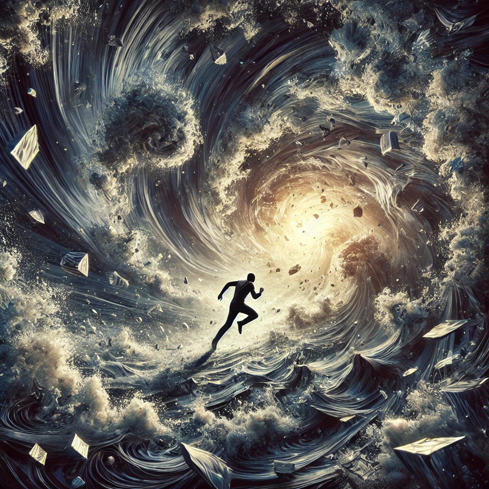

As the visions overwhelm your senses, you feel a rising panic. You try to resist the pull of the current, grounding yourself in the physical world. The fractals around you shatter, replaced by chaotic whirlpools of light and shadow.
Your heartbeat quickens as the alien voice grows distant, replaced by the sound of rushing winds. You realize that your resistance is creating turbulence, disrupting the flow. A dark vortex looms ahead, pulling you toward its center.
“The struggle is within,” a voice whispers faintly. “You cannot fight the path; you can only walk it.”

What do you do?